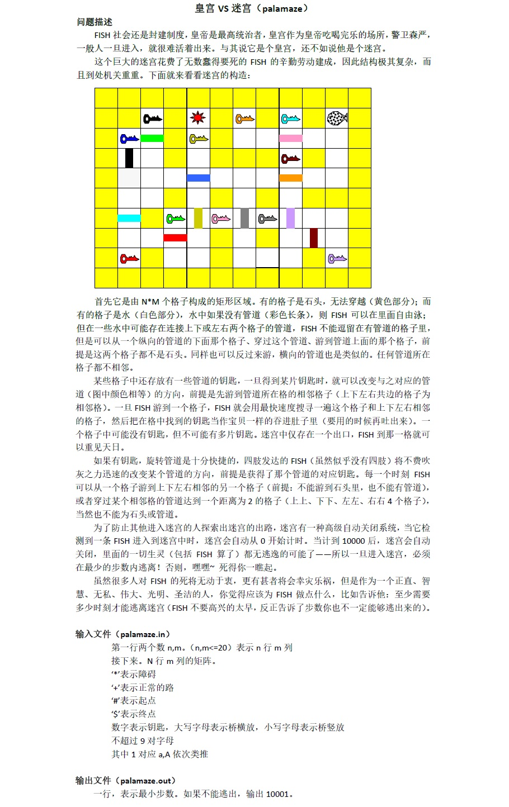

一次大规模的搜索考试…
Day 1
Maze
-
[Description]
给定长宽不大于2000的一个矩阵，某些点上有障碍物，求起点到终点的最短路径，若无输出”No Answer!”. -
[Solution]
双向DFS. -
[Summary]
没什么好说的…
Walk
-
[Description]
给定n(n≤10)种在二维平面上的行动方式(a,b)(|a|,|b|≤100)（每次可从(x,y)移动到(x+a,y+b)），问初始从平面上某一点开始，是否可能用这10种方式（不限次数）遍历平面上所有点。不超过10组数据。 -
[Solution]
（正好负责写这题题解，那就写详细点）
看到此题，我们有如下结论：若从某一点(x,y)开始行动，若存在遍历到(x-1,y)(x,y-1)(x,y+1)(x+1,y)四个点的方案，则遍历到任何点的方案也存在（由上面四种方案任意组合）。
乍一看像问四个n元不定方程是否有都正整数解，然而我们发现这样做好像并没有什么好的办法。
那就BFS吧…要是能搜到这个四个点就证明可行了。
但是，由于这个搜索是没有边界的，要是搜了很久也搜不到呢？我们如何得知是以后会搜到，还是永远都搜不到？
如果存在一个范围，使得可以证明要是在这个范围内无法搜到，就不可能搜到了。那这个范围存不存在呢？
是存在的。我们发现每个操作单个方向的移动步数不超过100，我们以起点为中心，向四个象限各扩展一个100100的矩形就是合法的范围呢？
为什么？我无法给出是严谨证明的，然而大家可以感受得出，任何一个遍历到终点的方案都存在由在这个200200的矩阵的一条路径。所以放心大胆搜就可以了！而且数据也很水（雾
其实在考场上我是比较虚的…搜了400*400，但并不会有错就对啦！ -
[Summary]
大胆的猜想…
Chess
-
[Description]
两人在4*4的格子中下“四子棋”，分别放置’x’’o’两种棋，当某人有整行整列或整个对角线的想通棋子时，此方获胜。此时游戏已经进行到一定阶段，问现在以’x’为先手，是否有必胜的策略，若有，输出字典序最小方案的第一步。 -
[Solution]
数据范围这么小直接DFS就好了！ -
[Summary]
其实自己想的就是DFS，打到一半发现比较复杂，而且时间不太多了，就弃疗了。
如果前面做的快一点这个题可能能打出来吧er…主要是第二题想证明，然后对拍暴力程序废了比较长的时间。
MC
-
[Description]
给定不超过50个结点和一些连边，要求选出结点数最多的完全图。输出最大结点数和选取方案数。 -
[Solution]
进行DFS，枚举每个人是否选择，这样选择的话可以使用二进制优化：首先边的储存可以变成二进制，e[v]|=（1LL << u-1）这样对于一个点i来说，e[i]表示的就是所有的i认识的集合，然后每次加入一个人，就将共同认识的集合缩小，E&=e[x]，同时将这个人加入存在集合，V|=1LL << x-1。然后如果发现有不认识的人混进了队伍，即E&V!=V，就及时返回。另外还有一个优化，就是类似迭代的记忆化版的搜索。每次降低一个标准，规定从i…n的人可以入选(i递减循环)，然后获得f[i]=ans(当前最优值)，这样就有if(f[x]+sum < ans) 也可以退出了，因为共同认识的集合是不断缩小的，所以最优值一定不会超过之前从它开始得到的最优值。加上两个优化，就可以快速的出解了。 -
[Summary]
打了个二进制暴力n,m还搞反了也是醉了…据说DFS裸搜有80分…
总结
感觉以后那道题还是要先打个暴力，反正对拍的时候也要打的，而且最后没打完也不慌。
Day 2
都是些简单的DFS/BFS题，大概只要按正常的题意打了然后正常的哈希正常的记忆化就能AC了~
sigh打完前三题只剩半个小时了于是没做完qwq.
Number
-
[Description]
给出50个3*3的矩阵，为1~9的一种排列，每次操作可交换相邻的两个数字，问这些分别进行最少多少次操作后可都变成每行每列及对角线的和均为15的矩阵。 -
[Solution]
康托展开+BFS.
可先预处理出目标状态（共有8个）的康托展开值。所以双向BFS也是支持的！
Clever
-
[Description]
给定六个小于10的正整数，有六种操作可以将它们变成另外六个小于10的正整数：
（初始光标在最左边的数）
1）将光标处的数与最左边的数交换；
2）将光标处的数与最右边的数交换；
3）将光标处的数++，若为9则不变；
4）将光标处的数 - -，若为0则不变；
5）将光标左移，若已在最左则不变；
5）将光标右移，若已在最右则不变；
问最小操作数。 -
[Solution]
状态记录是六位数*10+位置，直接开桶存就可以了。
Cake
-
[Description]
一个x*y的矩阵，每次需要沿边共切n-1刀将其分成n块面积相同矩形，并最小化n块中蛋糕长边与短边的比值的最大值，输出这个值最小值。 -
[Solution]
贪心不可过的。还是老老实实搜索。
Palamaze
-
[Description]
 -
[Solution]
搜索 . 搜索？搜索！
总结
代码能力还是太弱了…qwq
一个小错误就要调半个小时，以后要仔细一点，争取一遍就打对，会节约很多时间。